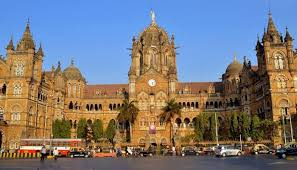
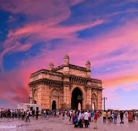
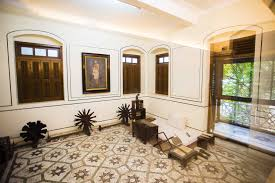

Chhatrapati Shivaji Terminus
Chhatrapati Shivaji, formerly known as Victoria Terminus, is a truly historic railway station, located in the South Mumbai area. The significance of this historical building is evident from the fact that in July 2004, UNESCO declared it as a World Heritage Site. No wonder, it is one of the most clicked monuments in India. In fact, the second most photographed Indian monument, with Taj Mahal being the first (as per numerous accounts).
Gateway of India
Built to commemorate the visit of King George V and Queen Mary to India in 1911, the Gateway of India is one of the most iconic monuments of Mumbai. Surprisingly though, the foundation of the building was laid in 1911, it was three years later, in 1914, that the design of the monument was finally sanctioned. It then took another ten years to build this historical monument.
Mani Bhavan
Mani Bhavan was home to the Mahatma during his 17-year stay in Mumbai, from 1917 to 1934. It was this place, from where Mahatma Gandhi conceptualised and launched some of the most disruptive freedom movements against the British Raj in India, including Satyagraha, Swadeshi Movement and Civil Disobedience Movement.